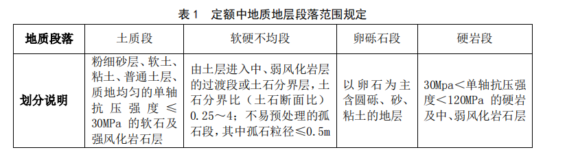

本章包括开挖、出渣、支护、衬砌、防水与排水、进料、辅助措施 7 节。
第一节 开挖
一、开挖定额包含气动机械钻爆法、液压台车钻爆法、机械破碎法等矿山法施工主要工法内容，
使用时根据设计要求选用。工区长度根据施工组织设计和本定额工程量计算规则确定。
1．气动机械钻爆法开挖定额按 31m2≤净空断面＜42m2、42m2≤净空断面＜76m2、76m2≤净空
断面＜92m2、92m2≤净空断面＜105m2分别编制；液压台车钻爆法开挖定额按 42m2≤净空断面＜76m2、
76m2≤净空断面≤105m2分别编制。机械破碎法开挖定额不区分净空断面。
2．气动机械钻爆法开挖定额，含采用气动凿岩机配合开挖台架钻爆法开挖工序相关工作内容，
Ⅱ、Ⅲ级围岩开挖按全断面工法编制，Ⅳ、Ⅴ级围岩开挖按两台阶、三台阶和多部开挖工法编制，
根据设计要求选用。
3.气动机械钻爆法开挖定额，按电动空气压缩机设置于洞口工区起点，工区长度≤500m 及每增
500m 编制，叠加使用。
4.液压台车钻爆法开挖定额，含采用三臂液压凿岩台车钻爆法开挖工序相关工作内容，Ⅱ、Ⅲ
级围岩开挖按全断面工法编制，Ⅳ、Ⅴ级围岩开挖按两台阶工法编制。
5.机械破碎法开挖定额，含铣挖机、静态膨胀剂等非爆破开挖工法。铣挖机法适用于Ⅳ、Ⅴ级
围岩开挖；静态膨胀剂法含破碎锤配合，适用于Ⅱ、Ⅲ级围岩开挖。
二、钻爆法开挖定额均按石方光面控制爆破编制，不含设计允许超挖、预留变形因素。隧道爆
破影响范围 50m 内的爆破振速为 3～9cm/s。
三、隧道附属洞室及构筑物指铁路隧道大小避车洞、工具室、电缆余长腔、深埋中心水沟及检
查井等，工区长度不区分具体设置位置综合计算。
四、开挖定额中已含湿式钻孔、岩面冲洗及降尘的施工用水抽排因素，不含洞内自然涌水抽排
因素，当洞内自然涌水影响正常施工时，应根据专项排水设计方案另行分析。
五、工程量计算规则
1．洞身、附属洞室及构筑物的开挖工程数量，均按设计图示洞身各级围岩开挖断面计算，含设
计允许超挖、预留变形量。
2．工区长度根据施工组织设计及以下规则确定。
（1）不设置辅助坑道的隧道：
长度≤1000m 的隧道可视为一个独立工区，工区长度等于隧道长度；长度＞1000m 的隧道可将进、
出口工区分别视为一个独立工区，工区长度为洞口至设计分界点的最大独头长度，无单独设计的可按
进、出口工区各承担隧道长度的 1／2 确定。
（2）设置辅助坑道的隧道：
自正洞口施工的正洞工区，视为一个独立工区，工区长度为正洞最大独头长度；自正洞口施工和
自平行导坑洞口施工的正洞交替段落，统一视为一个独立工区，工区长度为正洞最大独头长度，另加
1 个横通道长度；自平行导坑、横洞、斜井、竖井施工的正洞独立段落，视为一个独立工区，工区长
度为平行导坑、横洞、斜井、竖井通过段长度＋承担的正洞独立段落长度，其中平行导坑另加 1 个横
通道长度，斜井另加井底车场长度，竖井另加马头门环形通道长度；通过横洞、斜井、竖井施工的正
洞工区，当施工组织设计要求必须同时向两个正洞方向施工时,应视为两个独立工区，工区长度分别按
上述规则计算
第二节 出渣
一、出渣定额包含正洞有轨出渣、无轨出渣、通过辅助坑道出渣和洞外运渣等工作内容，与开
挖定额配套使用。
二、出渣定额，按不区分围岩级别综合编制，定额中已综合考虑松方因素。
1.正洞出渣定额，按区分不同断面工区长度≤500m 及每增 500m 编制，叠加使用。
2.正洞有轨出渣定额，已综合考虑洞外轨线铺设长度增加因素。
3.正洞通过平行导坑及无轨斜井出渣定额，按自身长度≤500m 及每增 500m 编制，叠加使用，应
与正洞出渣定额配套使用。
4.正洞通过有轨斜井、竖井出渣定额，含有轨斜井及竖井井底及井口倒装全部工作内容，按井
长≤100m 及每增 100m 编制，叠加使用，应与正洞出渣定额配套使用。
5.正洞通过斜井皮带机出渣定额，按斜井斜角为≤15°，斜井长度≤500m 及每增 500m 编制，叠
加使用，含斜井底渣仓及斜井口卸渣架长度，应与正洞出渣定额配套使用。
三、洞外运渣定额，倒运或增运的起点为正洞洞口或辅助坑道口，终点为施工组织设计确定的
弃渣地点。
四、工程量计算规则
1．洞身、附属洞室及构筑物出渣工程数量，均按设计图示开挖断面计算，含设计允许超挖、预
留变形量。
2．出渣工区长度计算规则与开挖一致，不扣除通过辅助坑道长度。
3．通过辅助坑道出渣运输按通过长度或自身长度计算。
第三节 支护
一、支护定额包含喷射混凝土、锚杆、钢网架、超前支护、围岩加固、拆除临时支护等工作内
容。
二、支护定额适用于隧道正洞、辅助坑道、洞口及地表相关工程的初期支护、临时支护、围岩
及地表加固工程。
三、喷射混凝土定额，按湿喷料喷射、回弹及处理分别编制。定额中未考虑设计允许超挖回填
和预留变形量回填因素。
四、锚杆定额，含锚杆制作与安装工作内容。砂浆锚杆按每根长 3m、直径 22 考虑，中空锚杆、
自钻式锚杆、涨壳式锚杆按每根长 3m、直径 25×5 考虑。当设计锚杆单根长度＞5m、规格与本定额
不一致时，锚杆及附件可以抽换。
五、钢网架定额，按人工铺设、机械安装分别编制，本节仅含洞内人工铺设或机械安装工作内
容，洞外集中加工、运输分别采用本册相关定额。钢筋网铺设按钢丝绑扎考虑，不含网格之间的搭
接。格栅钢架和型钢钢架定额中未考虑定位筋、钢架间连接钢筋增加因素。
六、超前支护定额，含小导管、管棚等管材制作、钻孔、安装、注浆等工作内容。超前小导管、
导向墙及管棚按钻孔、顶管机械及管径分别编制，当设计注浆浆液配合比与本定额不一致时，可以
抽换。
七、围岩加固定额，含超前加固、周边加固、地表加固的管材制作、钻孔、安装、注浆等工作内
容，当设计注浆浆液配合比与本定额不一致时，可以抽换。
八、地表注浆定额，含地表刚性袖阀管深孔注浆工艺工作内容，按 25m≤设计加固埋深＜75m、
75m≤设计加固埋深≤120m 分别编制。
九、拆除临时支护定额，仅含对临时支护体的凿除和拆除工作内容，不含临时支护喷射混凝土、
钢筋网、锚杆、钢架及连接钢筋拆除体的洞内运输。拆除混凝土运输采用相应施工段落围岩出渣定
额计算。拆除钢网架运输采用材料运输定额计算。洞外运输可采用本定额出渣洞外增运定额或相关
专业定额计算。
十、工程量计算规则
1．喷射混凝土工程数量，按喷射面积乘以设计厚度计算，喷射面积按设计外轮廓线计算，并应
计入设计允许超挖、预留变形应由喷射混凝土回填的数量和设计封闭掌子面数量。回弹及处理工程
数量按喷射混凝土工程数量的 16%考虑，可根据设计要求增减。
2．锚杆、锚管、锚索工程数量，均以“100m”为单位按设计图示长度计算。
3．钢筋网工程数量，按设计重量及设计搭接重量计算。
4．格栅钢架、型钢钢架工程数量，按设计钢架及定位筋、钢架间连接钢筋重量计算，不计螺栓、
螺母重量。
5．超前小导管及管棚工程数量，均以“100m”为单位按设计图示长度计算。
6．拆除临时支护喷射混凝土和混凝土工程数量，按全部设计混凝土体积计算。拆除临时支护混
凝土运输工程数量，按全部设计拆除混凝土体积，采用出渣定额计算。
7.拆除临时支护钢架及钢筋网工程数量，按全部设计钢架及钢筋网重量计算，另按钢材价值的
20%扣除残值；如设计钢架考虑周转使用，按设计确定周转次数计算摊销费用并按 20%扣除残值。拆
除钢网架运输，按全部设计重量计算，不得将残值因素考虑在内。
一、衬砌定额包含混凝土浇筑、钢筋安装、综合接地、拱顶压浆等工作内容。
二、混凝土浇筑定额，按正洞洞身和附属构筑物分别编制。本节仅含洞内浇筑工作内容，洞外
集中拌制、运输分别采用本册相关定额。定额中仅考虑了混凝土的操作损耗，未考虑设计允许超挖
回填和预留变形量回填因素。
三、钢筋安装定额，按洞内焊接安装和套筒安装分别编制，本节仅含洞内钢筋安装工作内容，
洞外集中加工、运输分别采用本册相关定额。
四、综合接地定额，按接地方式综合编制，定额中包含接地端子焊接、测试等工作内容，不含
接地主体钢筋或线缆材料等。
五、拱顶压浆定额，按回填压浆和预留孔压浆分别编制，当设计采用浆液配比与本定额不符时，
可以抽换。
六、工程量计算规则
1．衬砌混凝土工程数量，按设计图示洞身各级围岩衬砌断面外轮廓线面积乘以厚度计算。还应
计入设计允许超挖、预留变形应由模筑混凝土回填的混凝土工程数量，不扣除洞身钢筋、支护钢架
体积。
2．附属构筑物混凝土工程数量，按设计图示混凝土数量计算。
3．洞身钢筋工程数量，按设计图示钢筋重量及搭接数量计算。
4．综合接地工程数量，按设计引下接地的数量计算，由于接地而额外增加的钢构件数量计入洞
内钢筋、锚杆等相应工程数量。
5．拱顶压浆工程数量，设计时可按正洞每延长米 0.25m3计算。
一、防水与排水定额包含防水板、土工布、保温层、止水带、施工缝处理、刷界面剂、深埋中心
水沟、沟槽盖板安装、透水管等工作内容。
二、防水板、土工布、保温层定额，定额中仅考虑操作损耗，不含搭接及松弛度增加因素。当设
计采用的防水板、土工布、保温层、透水管、止水带材料规格与定额不符时，可以抽换。
三、深埋中心水沟定额，适用于隧道仰拱下方设置的中心排水管沟工程，定额中已考虑寒区隧
道设置保温层因素，当设计采用保温材料与本定额不符时，可以抽换。
四、工程量计算规则
1．防水板、土工布、保温层工程数量，按设计敷设面积及搭接和松弛度要求计算。
2．止水带、盲沟、透水软管工程数量，均按设计图示长度计算。
第六节 进料
一、进料定额包含混凝土和材料的正洞运输、通过辅助坑道运输等工作内容，根据施工组织设
计确定的运输方式和工区长度选用。
二、混凝土运输定额，适用于本章衬砌、支护节中混凝土及喷射混凝土等构成工程实体及回弹、
回填混凝土材料的运输。定额中已考虑混凝土的操作损耗。
三、材料运输定额，适用于衬砌节中洞身钢筋，防水与排水节中防水板、止水带、盲沟、透水
管，钢筋混凝土盖板等构成工程实体材料运输，以及支护节中所有构成实体材料的运输。
四、混凝土和材料的正洞运输定额，均按工区长度≤500m、每增 500m 编制，叠加使用。
五、通过平行导坑和无轨斜井运输定额，按自身长度≤500m 及每增 500m 编制，叠加使用。通过
有轨斜井、竖井运输定额，按井长≤100m 及每增 100m 编制。叠加使用，含有轨斜井、竖井井底至井
口倒装全部工作内容，应与正洞运输定额配套使用。
六、工程量计算规则
1．进料工区长度计算规则与开挖一致，不扣除通过辅助坑道长度。
2．通过辅助坑道进料按通过长度或自身长度计算。
3．混凝土运输工程数量与洞身衬砌及附属构筑物工程数量计算一致。
4．材料运输工程数量，按需要进料的重量以“t”为单位计算，采用定额统计重量作为工程数
量。计算范围为洞身钢筋、防水板、止水带、盲沟、透水管、钢筋混凝土盖板、锚杆、小导管、管
棚、钢筋网、钢架等构成工程实体定额材料重量。
第七节 辅助措施
一、本节包含通风、管线路、施工辅助台架、衬砌模板模架、施工量测、超前钻探等工作内容。
二、通风与管线路定额包含正洞通风、管线路安拆维护与使用摊销工作内容，与开挖、出渣定
额配套使用。根据工区长度及工期选用。
1.通风定额，按正洞施工工期内不间断通风考虑，以“月”为单位编制。
2.加强通风及局部通风定额，适用于根据施工组织设计需要串联风机或采用巷道式通风的正洞
或通过辅助坑道施工的正洞段落。以“台月”为单位编制，根据设计要求组合使用。
3.管线路定额，适用于隧道内高压风、水管及照明、动力电线路的安拆、维护、使用摊销和照
明用电。安拆维护定额按跟铺、维护及一次性拆除考虑，以”m”为单位编制；使用摊销定额按单个
工区管线摊销及照明每使用一个月考虑，以”m”为单位编制，配套使用。
4.通过辅助坑道管线路摊销增加定额，适用于通过辅助坑道施工正洞时，辅助坑道内一次性换
铺的管线在施工正洞期间的使用摊销的增加，以及动力、照明电线路及器材摊销的增加和照明用电，
按正洞施工工期每使用一个月考虑，以辅助坑道长度”m”为单位编制，根据设计要求组合使用。
三、施工辅助台架与衬砌模板模架定额，包含开挖台架、仰拱栈桥、衬砌钢台模、组合钢模板、
沟槽模架、仰拱模架、防水板台架等隧道施工必要的辅助设施。均按隧道延长米综合编制。定额中
已含正常材料摊销及回收，使用中不得另计设施及材料残值。
四、施工量测定额适用于铁路隧道开挖至衬砌完成全过程的必要量测工作，不区分测点功能及
用途综合编制。
五、加深炮孔定额，按单孔深 5m，气动机械钻眼编制；超前水平钻定额，按单孔深 100m，冲击
钻与取芯钻分别编制。
六、工程量计算规则
1．通风工程数量，根据工区内正洞各级围岩长度及设计进度计算的各级围岩工期，按自然月以
“月”为单位分别计算。各级围岩工期之和应等于工区总工期。
2.加强通风和局部通风工程数量，根据施工组织设计确定的通风设备增加数量和使用工期，按
自然月以“台月”为单位计算。
3.管线路安拆维护工程数量，按正洞内各级围岩长度以”m”为单位计算。
4.管线路每使用一个月摊销定额，以正洞内各级围岩长度分别计算使用工期，按正洞内各级围
岩长度，以”m”为单位分别计算。
5.管线路通过辅助坑道每使用一个月摊销增加定额，以正洞内各级围岩长度分别计算使用工期，
以辅助坑道自身长度为工程数量，以”m”为单位计算；与正洞管线路定额叠加使用。
6．正洞洞身开挖台架、仰拱栈桥、衬砌钢台模、组合钢模板、沟槽模架、仰拱模架、防水板台
架、支护台架的工程数量按隧道洞身延长米计算。
7．附属构筑物组合钢模板工程数量，按模板接触面积计算。
8．施工量测工程数量，洞内按设计图示各级围岩测点数量计算，洞外按测点计算。
9．风钻加深炮孔及超前水平钻探工程数量，均按设计单孔全长计算。
本章包括掘进、支护、衬砌、辅助措施 4 节。
一、掘进机法定额适用于采用掘进机（以下简称 TBM）施工的新建铁路隧道工程。
二、掘进机法定额采用的 TBM 为圆形断面刀盘式全断面敞开式岩石掘进机，刀盘直径范围为标
称直径的±0.5m，即 9m 直径适用范围为 8.5m＜Ф≤9.5m，10m 直径适用范围为 9.5m＜Ф≤10.5m。
三、TBM 由刀盘、主轴承及液压系统、机上运转辅助设备及后配套系统等组成。后配套系统包括
连接桥、后配套拖车及辅助设备。本册定额 TBM 机械台班费用定额中 TBM 设备组成不含机上拱架安
装机、混凝土喷射机等机上可独立施工设备。
第一节 掘进
一、本节定额含步进、正常段掘进、出渣进料等内容。
二、步进定额含 TBM 自正洞口通过已开挖完成的隧道出发洞、预备洞，步进至掘进面的全部工
作内容。
三、正常段掘进定额含 TBM 掘进、换步、仰拱块同步安装等工作内容。
1．掘进定额按铁路隧道围岩基本分级标准综合编制，已综合考虑正常掘进和试掘进因素。
2．掘进定额中刀具正（边）滚刀按直径 483mm 单刃规格编制，中心刀按 432mm 双刃规格编制，
刀具消耗量中已综合考虑正常磨损、更换刀圈及维修因素，也综合考虑了因地质原因刀具异常损坏
因素，设计阶段不得抽换调整规格及消耗。
3．掘进定额中施工排水均按顺坡和正常施工排水编制。
四、出渣进料定额含正洞皮带机出渣、仰供块运输、进人进料、轨道铺拆及养护全部工作内容。
1．出渣进料定额按工区长度≤1000m 及每增 500m 编制，叠加使用。
2．出渣进料定额按皮带机出渣、轨道进料编制，已综合编制机车库、材料库、仰拱块、翻渣场
的各类运输工作内容。洞外洞渣二次倒运可采用相关专业定额。
五、工程量计算规则
1．正洞掘进、出渣进料运输工程数量，按设计图示各级围岩开挖断面计算，含设计允许超挖、
预留变形量。
2．TBM 工区长度为 TBM 独立工区最大独头施工长度，不扣除步进段和出发洞长度。
第二节 支护
一、本节支护定额含 TBM 机上喷射混凝土、锚杆、钢网架工作内容。
二、本节定额使用机械设备均为 TBM 机上可独立施工设备，已另行编制相应机械台班费用定额。
三、喷射混凝土定额按机上喷射机械湿喷编制，回弹及处理参照第一章第三节相关子目。喷射
混凝土洞内运输已在出渣进料定额中综合考虑。定额中未考虑设计允许超挖回填和预留变形量回填
因素。
四、锚杆、钢筋排、钢网架定额，含材料制作与安装工作内容。砂浆锚杆按每根长 3m、直径 22
考虑，当设计锚杆单根长度大于 5m、规格与本定额不一致时，可以抽换。材料运输已在出渣进料定
额中综合考虑。
五、工程量计算规则
1．喷射混凝土工程数量，按喷射面积乘以设计厚度计算，喷射面积按设计外轮廓线计算，并应
计入设计允许超挖、预留变形应由喷射混凝土回填的数量。回弹及处理工程数量按工程数量的 16%考
虑，可根据设计要求增减。
2．锚杆工程数量，均以“100m”作为单位计算，按设计图示长度之和计算。
3．钢筋排、钢筋网、钢架工程数量，均按设计钢筋排、钢筋网、钢架及其之间连接钢筋重量计
算，不计螺栓、螺母重量。
第三节 衬砌
一、本节定额含洞身混凝土浇筑、仰拱块预制等工作内容。
二、洞身混凝土浇筑按拱墙、填充分别编制，辅助构筑物混凝土采用第一章相关定额子目。定
额消耗中未考虑设计允许超挖回填和预留变形量回填因素。
三、仰拱块按集中预制编制，当设计采用的混凝土强度等级与定额不符时，可以抽换。 仰拱块
钢筋采用第七章相关子目。
四、防水采用第一章相关定额子目，当设计采用的防水材料与定额不符时，可抽换。仰拱块的
吊杆、轨道螺栓等预埋件材料未计入。
五、工程量计算规则
1．洞身衬砌工程数量，按设计图示各级围岩衬砌断面外轮廓线面积乘以厚度计算。还应计入设
计认为必要的允许超挖、预留变形量应由模筑混凝土回填的混凝土工程数量，不扣除洞身钢筋、支
护钢架体积。
2．仰拱块的工程数量，按设计图示仰拱块体积计算，仰拱块钢筋按“t”计算。
第四节 辅助措施
一、本节包括 TBM 安装调试、通风、管线路、衬砌模板模架、施工量测等工作内容。
二、TBM 安装调试定额适用于洞外拼装场安装，含安装、调试全部工作内容。拆卸定额适用于
TBM 拆卸洞洞内拆卸。
三、TBM 洞身衬砌模板按圆形断面穿行式钢台模编制。
四、TBM 已成洞地段的防水板等台架、附属构筑物组合钢模板等可采用第一章相关定额子目。
五、TBM 施工地段监控量测不区分测点功能及属性，不分围岩级别综合编制，定额中已含洞内外
观察等工作内容。
六、工程量计算规则
1.TBM 安装调试、拆卸按台次计算。
2．通风工程数量按照正洞工区的各个围岩段落施工进度确定各自工期，分别按“月”计算。
3．管线路安拆维护定额工程数量按工区长度以”m”计算；管线路使用摊销定额按工区长度以”
m”及正洞各个围岩段落工期“月”组合计算。
4．洞身衬砌穿行式钢台模按隧道延长米计算。
5．施工量测按设计图示测点数量计算。
本章包括掘进、管片及箱涵、注浆、工作井、辅助措施 5 节。
一、盾构法隧道定额适用于采用土压平衡、泥水平衡盾构机施工的新建铁路隧道工程。
二、盾构法定额采用的盾构机为圆形刀盘式土压平衡盾构机和泥水平衡盾构机。盾构机刀盘直
径范围为标称直径的±0.5m，即 9m 直径适用范围为 8.5m＜Ф≤9.5m，11m 直径适用范围为 10.5m＜
Ф≤11.5m，12m 直径适用范围为 11.5m＜Ф≤12.5m，13m 直径适用范围为 12.5m＜Ф≤13.5m，14m
直径适用范围为 13.5m＜Ф≤14.5m，15m 直径适用范围为 14.5m＜Ф≤15.5m。
三、本定额将盾构掘进地质段落综合划分为土质段、软硬不均段、卵砾石段、硬岩段，见表 1。

四、盾构机设备由刀盘、主轴承及液压系统、机上运转辅助设备及后配套系统等组成。后配套
系统包括连接桥、后配套拖车及辅助设备。本册定额盾构机设备机械台班费用定额，盾构机设备组
成不含机上注浆泵及泥水循环系统设备。
五、土压平衡盾构定额按螺旋输送机及带式输送机联合装渣，矿车有轨出渣进料模式编制，泥
水平衡盾构定额按泥水管路循环出渣、有轨运输或无轨进人进料模式综合编制。
一、本节定额含土压平衡盾构掘进和泥水平衡盾构掘进，分别按通过段、负环段、始发段、到
达段、正常段等工作内容编制。
二、掘进定额按盾构整体始发编制，已综合考虑正常掘进和试掘进工效因素。
三、盾构按负环段、始发段、到达段及正常掘进段各地质地层分别编制。负环段是指从拼装后
靠管片起至盾尾离开始发井内壁止的掘进段。始发段是指盾尾离开始发井 10 倍盾构直径的掘进段。
正常段是指从始发段掘进结束至到达段掘进开始的全掘进段。到达段是指盾构切口距接收井外壁 5
倍盾构直径的掘进段。始发段、到达段定额不含洞门破除工程内容。
四、掘进定额已综合考虑刀具正常磨损、更换刀圈及维修因素，也综合考虑了刀具异常损坏因
素，设计阶段不可抽换调整规格及消耗。正（边）滚刀按直径 432mm 单刃规格编制，中心刀按直径
432mm 双刃规格编制，刮刀、齿刀、切刀刀具按 120mm 规格编制。
五、掘进定额中不含泥水平衡盾构带压进仓费用，单次开仓费用指标可参考本册定额费用定额
计算。进仓次数在设计阶段由设计单位依据地层地质情况确定。
六、掘进定额包含管片及箱涵安装工作内容，定额中不含螺栓材料，使用中应根据设计另行计
列。
七、掘进定额中施工排水均按管路排水考虑。
八、出渣进料定额含隧道出渣、泥水管路出渣、进人进料全部工作内容。出渣进料定额按工区
长度≤1000m 及每增 500m 编制，叠加使用，工区长度不扣除步进段长度。
九、出渣进料定额包含管片、箱涵、材料等的洞内运输及工作井垂直运输，垂直运输按井底至
井口≤40m 考虑。
十、泥水处理中泥浆调制、废浆排放的工程数量应首先根据地层性质确定难以分离颗粒的粒径
指标界限值，大于界限指标颗粒物按渣土考虑，小于界限指标颗粒物按含在废浆内考虑，废浆处理
按压滤，运弃渣土模式考虑。
十一、刀盘直径 13m 及以上盾构的掘进及出渣进料定额按无轨运输编制。
十二、工程量计算规则
1．盾构掘进工区长度为始发井与到达井井壁之间的暗挖隧道长度，含步进或空推段。
2．盾构掘进、出渣进料运输工程数量，按设计刀盘直径乘以掘进长度的几何体积计算。
3．泥浆调制的工程数量按总泥浆保有量×（1+0.04×正洞总环数）计算。总泥浆保有量=开挖
刀盘泥水仓容积+洞内工区泥浆输送管路容积/2+地面和工作井泥浆输送管容积+泥浆制备池容积。
4．泥浆分离工程数量按设计全部洞体掘进体积计算，泥浆压滤工程数量根据地层性质由设计确
定。
5．通风工程数量按照正洞工区长度内的各个地层段落施工进度确定各自工期，分别按“月”计
算。
6．管线路安拆维护定额工程数量按工区长度以“m”计算；管线路使用摊销定额按工区长度以”
m”及正洞各个地层段落工期“月”组合计算。
一、本节定额含管片及箱涵预制、管片防水及检测、管片及箱涵洞外运输工作内容。
二、管片定额，仅编制管片预制子目，已含螺栓套预埋工作内容，定额中不含螺栓套材料，使
用中应根据设计另行计列；管片拼装、洞内运输已在掘进、出渣进料定额中综合考虑。
三、箱涵定额，适用于刀盘直径 13m 及以上盾构法隧道，仅编制箱涵预制子目，箱涵拼装、洞
内运输已在掘进、出渣进料定额中综合考虑。箱涵侧、底混凝土填充及架立钢筋和植筋可采用第一
章及相关专业定额。
四、管片密封条定额，按管片最外侧密封条敷设长度“m”为单位编制，管片嵌缝定额按嵌缝长
度“m”为单位编制。
五、如设计采用管片外二次衬砌，可采用本册定额相关混凝土子目，不计洞内运输费用。
六、预制管片检测按检测及台座分别编制，水平拼装、抗渗、抗弯检测定额所使用的钢制拼装
台座、抗渗台座、抗弯台座根据管片重量由设计确定。
七、管片及箱涵洞外运输适用于预制场至工作井之间短驳运输，外购长距离运输应另行分析。
八、工程量计算规则
1．管片、箱涵工程数量按设计图示混凝土体积计算。
2．管片密封条长度工程数量按设计图示管片最外侧敷设弹性橡胶密封垫长度以“m”计算，管
片嵌缝长度按设计图示管片嵌缝长度以“m”计算。
3．盾构钢制拼装台座、抗渗台座、抗弯台座工程数量根据管片重量由设计确定，当设计暂无规
定时，可按钢制拼装台 12t/座，抗渗台座 9t/座，抗弯台座 5t/座编制，台座均按 1 个工区摊销，并
按钢材价值的 20%扣除残值。
一、本节定额含同步注浆、二次注浆工作内容。
二、同步注浆、二次注浆定额适用于盾构施工壁后注浆和壳体注浆，按净注浆体积编制，损耗
率按 5%计。定额中未含浆液充填扩散因素，当设计采用浆液配比与定额中不同时，可以抽换。
三、工程量计算规则
1．同步注浆工程数量按设计刀盘直径与管片外径之间的盾尾间隙几何体积计算。并根据地层条
件、施工沉降控制和风险应对要求确定充填系数。
2．二次注浆工程数量结合地层损失、同步注浆材料性能、沉降观测结果和控制标准确定。
3．壳体注浆工程数量根据盾构壳体直径与刀盘直径之间的间隙体积计算，综合考虑地质条件和
环境要求确定。
一、本节定额含工作井开挖、洞口柔性接缝环、混凝土环圈工作内容。
二、工作井开挖定额，仅编制石方开挖，当工作井为土质时可采用相关专业定额。
三、洞口柔性接缝环适合于盾构工作井洞门与圆隧洞接缝处理，按施工阶段和正式阶段分别编
制。
四、工程量计算规则
1．工作井石方工程数量按设计图示开挖数量计算。
2．柔性接缝环长度按隧道外缘周长计算。
一、本章定额含盾构机安装调试、拆除、施工通风、管线路、施工量测等工作内容。
二、安装调试定额包括主机吊装调试和车架吊装调试，按出发井及井侧场地吊装、井内调试编
制。
三、拆除定额含主机、车架吊拆，负环管片拆除，洞内临时设施拆除。主机、车架吊拆按在盾构
到达井及井侧场地编制。负环管片按在出发井内拆除编制。洞内临时设施拆除按工区长度综合编制。
四、车架吊拆定额，吊拆 50t 车架适用于土压平衡盾构，吊拆 60t 及以上车架适用于泥水平衡
盾构。
五、洞内临时设施拆除定额适用于工区长度＞2000m 的泥水平衡盾构工程。
六、始发工作台架定额按泥水盾构始发台、反力架现场制作编制，需拆除的临时钢台架按一次
摊销考虑，并扣除残值。
七、通风、管线路定额包含通风、管线路安拆维护、使用摊销等工作内容。
八、施工量测定额含洞内结构量测、洞外环境量测等工作内容，均按“10 个测点”编制。
九、工程量计算规则
1．主机、车架安装按台次计算。
2．负环管片拆除按米计算。洞内临时设施拆除按工区长度计算。
3．始发工作台架工程数量按设计数量确定，当设计暂无规定时，可按参考指标表 4 执行，并按
钢材价值的 20%扣除残值。
4．通风工程数量按照正洞工区的各个地层段落施工进度确定各自工期，分别按“月”计算。
5．管线路安拆维护定额工程数量按工区长度以“m”计算；管线路使用摊销定额按工区长度以
“m”及正洞各个围岩段落工期“月”组合计算。
一、本章包括明洞开挖、明洞出渣、明洞衬砌、明洞防水、拱顶回填、辅助措施 6 节，适用于
隧道洞口接长明洞、独体明洞及相关附属工程。
二、明洞开挖按明洞明挖和明洞暗挖分别编制。
三、明洞衬砌包含明洞混凝土浇筑、钢筋安装工作内容，定额中已考虑混凝土、钢筋的操作损
耗。
四、明洞防水按黏土隔水层、沥青防水层、橡胶防水层及橡胶沥青防水层分别编制。热粘沥青
卷材、反粘防水板定额，仅考虑了沥青卷材、防水板的操作损耗，不含搭接及松弛度增加因素。
五、拱顶回填包含砌筑片石、填筑碎石及回填土石等工作内容，不含材料垂直和水平运输，可
根据设计采用相关专业定额另计。
六、工程量计算规则
1．明洞混凝土浇筑工程数量，按设计图示数量计算。
2．明洞钢筋网安装工程数量，按设计重量及设计搭接重量计算。
3．热粘沥青卷材、反粘防水板工程数量，按设计敷设面积及搭接和松弛度要求计算。
4．明洞其他防水工程数量按设计图示面积计算。
5．明洞钢台模工程数量，按明洞延长米计算。
6．组合钢模板按模板接触面积计算。
7．钢支撑使用工程数量，按设计图示重量以“t”计算。
一、本章包括洞门、洞门附属、辅助措施 3 节，适用于铁路隧道洞门及附属工程。
二、洞门混凝土浇筑定额，不含混凝土拌制、运输，按第七章相关子目另计。
三、洞门土石方、基础及边仰坡防护工程，可采用相关专业定额。
四、洞门模板按木模、钢模、塑料模板分别编制，脚手架按单、双排脚手架编制，不含脚手架基
础加固，根据设计要求选用。
五、工程量计算规则
1.洞门混凝土及附属工程，均按设计图示数量计算。
2.洞门模板工程数量，按模板接触面积计算。
3.脚手架工程数量，按洞门设计图示最大宽度乘以洞门高度以面积计算，不扣除隧道洞口面积。
一、本章包括平行导坑、斜井、竖井 3 节，适用于辅助坑道及附属洞室自身施工。通过辅助坑
道施工正洞期间的正洞开挖、出渣、通风与管线路、进料等按第一章相关定额执行。
二、平行导坑定额，适用于与正洞平行且超前施工的贯通或非贯通辅助坑道工程，也适用于横
洞、横通道、迂回导坑工程。有轨平行导坑 18 ㎡＜开挖断面≤25m2，无轨平行导坑25m2＜开挖
断面≤40m2。
三、斜井定额，有轨斜井适用于采用轨道斗车提升出渣进料的主、副斜井工程，按斜井长≤800m、
综合坡度≤70%（斜角≤35°）编制。无轨斜井适用于采用汽车出渣进料的缓坡斜井、斜坡道工程，
按斜井长≤3500m、综合坡度≤12%（斜角≤8°）编制；有轨斜井按 18 ㎡＜开挖断面≤25m2编制，
无轨斜井按 25m2＜开挖断面≤40m2编制。
四、竖井定额，适用于采用普通凿井法钻爆施工，绞车垂直提升出渣进料的主、副竖井工程，
按竖井长≤800m，4m＜井径≤6m、6m＜井径≤8m 分别编制。
五、辅助坑道开挖、出渣定额，采用气动机械钻爆法综合编制。平行导坑及无轨斜井按平行导
坑长度或斜井长度≤500m、每增 500m 编制，叠加使用；有轨斜井及竖井按井长≤100m、每增 100m 编
制，叠加使用。
六、辅助坑道通风与管线路定额
1.通风定额，适用于施工辅助坑道自身施工通风，按在自身施工期内不间断通风考虑，以“月”
为单位编制。
2.管线路定额，适用于辅助坑道自身施工期间管线路安拆维护和使用摊销。安拆维护定额按根
据施工进度跟铺、维护及一次性拆除考虑，以“m”为单位编制；使用摊销定额，按辅助坑道自身施
工期间管线摊销及照明每使用一个月的消耗考虑，以“m”为单位编制，组合使用。
七、当设计利用辅助坑道作为防灾救援疏散通道进行全区段衬砌时，应采用第一章正洞衬砌定
额并计入设计认为必要的回填工程数量。
八、工程量计算规则
1．辅助坑道开挖、出渣工程数量，均按设计图示各级围岩开挖断面外轮廓线计算，不计允许超
挖、预留变形量。含各种横通道及附属洞室的开挖、出渣工程数量。
2．辅助坑道衬砌工程数量，按设计图示数量计算，采用正洞定额的执行第一章工程数量计算规
则。
3．通风工程数量，按照辅助坑道自身范围内各级围岩长度及设计进度计算各级围岩工期，按自
然月以“月”为单位分别计算。各级围岩工期之和应等于自身设计总工期。
4．管线路安拆维护工程数量，按辅助坑道自身长度以“m”计算。
5．管线路使用摊销，按辅助坑道自身范围内各级围岩工期分别以“月”为单位调增定额，以自
身长度为工程数量，以“m”为单位计算。各级围岩工期之和应等于自身设计总工期。
6．辅助坑道材料运输，采用统计重量以“t”为计算单位作为工程数量。材料重量的计算范围
为本章钢筋、防水板、土工布及支护章的锚杆、小导管、管棚、钢筋网、钢架等构成辅助坑道实体的
定额材料重量。
7．辅助坑道台架、组合钢模板的工程数量按辅助坑道自身设计长度计算。
一、本章包括混凝土集中拌制、小型混凝土构件预制、钢构件集中加工、材料洞外增运 4 节，
与隧道洞内混凝土浇筑、构件安装及运输等配套使用。
二、混凝土集中拌制定额，混凝土集中拌制按搅拌站生产能力和混凝土强度等级分别编制，已
考虑混凝土的操作损耗。当设计采用的混凝土强度等级与本定额不符或采用特殊混凝土时，可以抽
换。其中喷射纤维混凝土集中拌制纤维掺入量按体积率 1.0%考虑。
三、钢构件集中加工定额，与洞内钢筋、钢筋网、钢架安装、材料运输定额配套使用。定额中仅
考虑了钢加工的操作损耗，不含搭接因素，当设计采用钢筋规格与本定额不符时，可以抽换。
四、材料洞外增运定额，增运起点为集中加工地点，终点为正洞口或辅助坑道口。
五、工程量计算规则
1.混凝土工程数量计算规则与主体浇筑定额一致。
2.小型混凝土构件、钢构件集中加工工程数量计算规则与主体安装定额一致。
3.洞外增运定额按设计数量计算，含超挖回填及钢筋搭接数量。